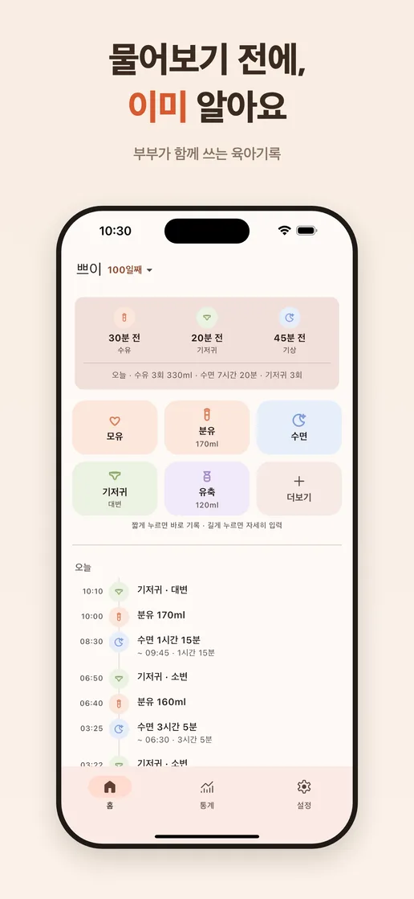
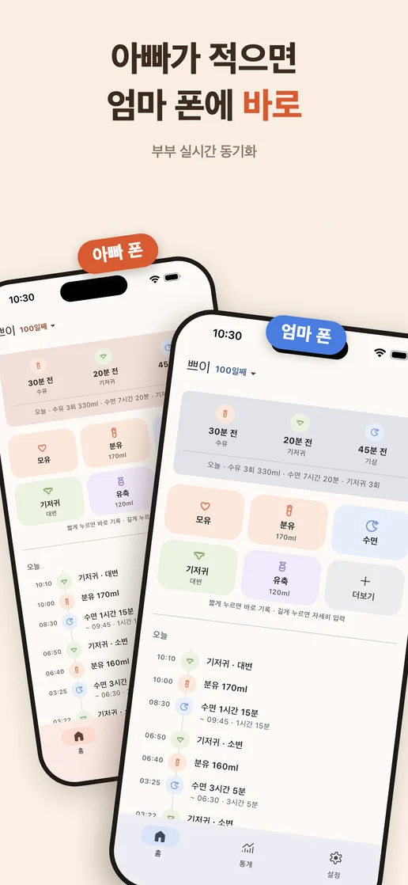
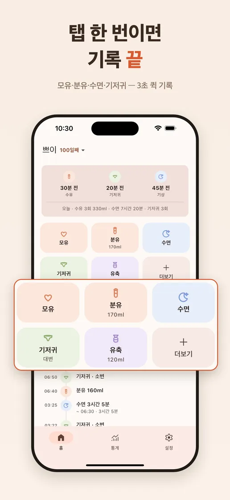
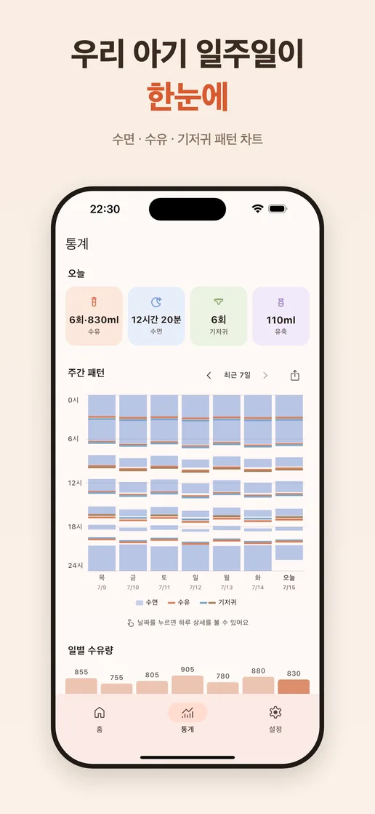
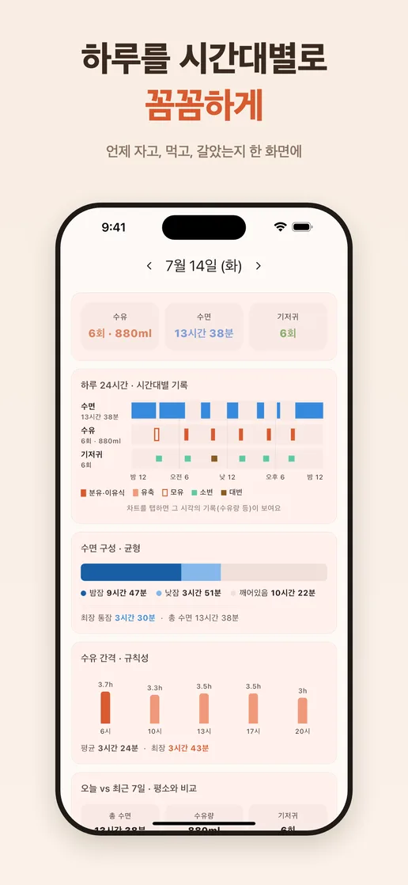
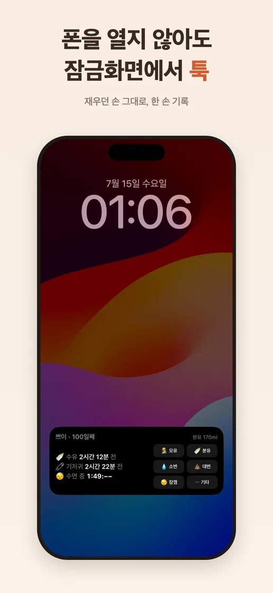

둘이 써도 하나처럼
6자리 코드로 배우자를 연결하면 한 명이 남긴 기록이 두 폰에 실시간으로 동기화돼요.
부부가 함께 쓰는 아기 기록
한 명이 기록하면 두 사람의 폰에 바로. 수유·수면·기저귀부터 하루의 흐름까지, 교대할 때 설명하지 않아도 함께 알 수 있어요.

무료 · 광고 없음
iPhone · 한국 App Store


함께 돌보는 하루
새근새근은 기록을 많이 남기게 하기보다, 다음 보호자가 지금 알아야 할 것을 바로 보여주는 데 집중합니다.
6자리 코드로 배우자를 연결하면 한 명이 남긴 기록이 두 폰에 실시간으로 동기화돼요.
수유·수면·기저귀 등 15가지 기록을 탭 한 번으로. 잠금화면에서도 바로 남길 수 있어요.
24시간 타임라인과 주간 패턴으로 우리 아기의 먹고 자는 흐름을 담백하게 확인해요.
앱 미리보기




광고와 광고 추적 없이, 초대한 가족만 기록을 볼 수 있어요. 기기를 바꿔도 기록은 이어지고 계정과 데이터는 언제든 직접 삭제할 수 있습니다.